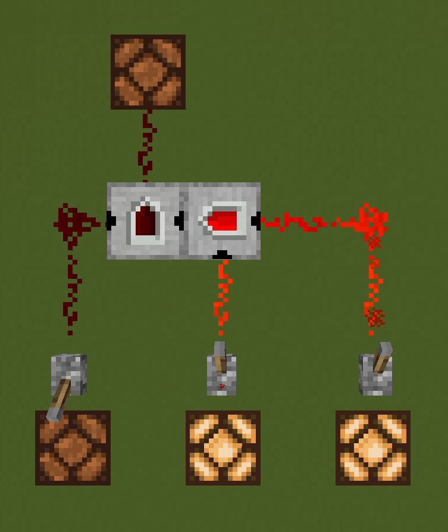

Redstone CG is a Minecraft mod that introduces redstone-compatible logic gates, analog gates, wires, and signal indicators.
Key Features
- Customizable Input Configurations: Unlike other redstone mods, Redstone CG allows multiple input configurations for each component. For example, a two-input AND gate may support the following configurations:
- Left and Right
- Left and Back
- Right and Back
- Instant Signal Processing: Gates in Redstone CG work instantly, providing correct outputs within a single tick.

Where to Start?
Ready to dive in? Check out these pages to get started:
Future of Redstone CG
In the future iterations of this mod, it is planned to add more elements, such as:
- Wall Gates, Wires and Indicators
- Wall mounted Gates, Wires and Indicators
- Ceiling Gates, Wires and Indicators
- Framed Gates, Wires and Indicators
Credits
This mod was created and developed Acodonic King.
This mod was created and designed in MCreator.
Documentations Vanilla Minecraft resources were picked from Minecraft Wiki.
Documentation Minecraft font was picked from Dalton Edwards - Minecraft Text.
This documentation was created with OpenAI ChatGPT, mistakes and page design were corrected by Acodonic King.